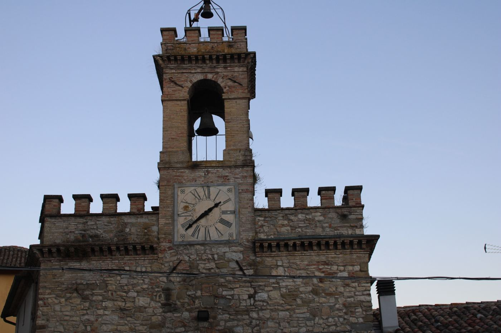
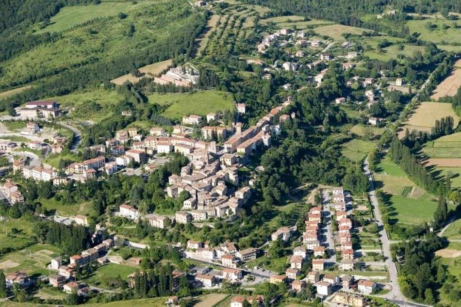
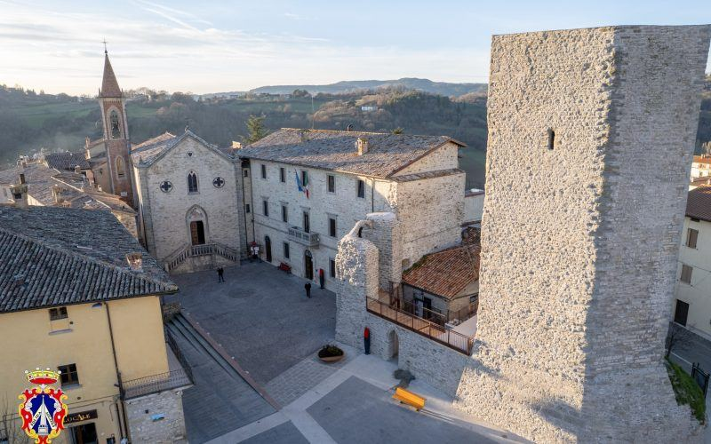
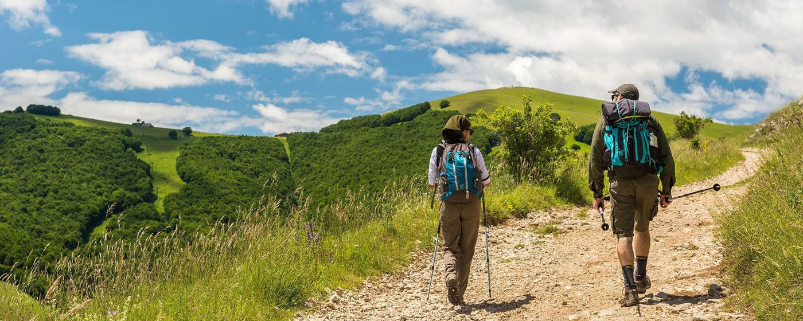

Un monolocale sulla Piazzetta dell’Orologio
Travi a vista, pietra e vicoli silenziosi nel centro storico di Pietralunga, in Umbria.
Prenota il tuo soggiorno Guarda le fotoIl monolocale
Siamo nel primo vicolo che parte dalla Piazzetta dell’Orologio, a pochi passi dalla piazza principale, dai negozi e dai ristoranti del paese.
Dentro trovi soffitto con travi in legno, bagno privato con doccia, angolo cottura attrezzato e due letti singoli unibili in matrimoniale. Adatto a coppie, amici, viaggiatori singoli e pellegrini.
- 2 ospiti
- 1 bagno privato

Cosa trovi
- Due letti singoliUnibili in matrimoniale, con biancheria e asciugamani.
- Angolo cotturaPiano a induzione, bollitore, macchina da caffè e frigorifero.
- Bagno privatoDoccia, bidet e asciugacapelli.
- Wifi e TVPer organizzare il viaggio o rilassarti la sera.
- Animali ammessiPuoi viaggiare con il tuo amico a quattro zampe.
- PosizioneNel centro storico, a piedi da piazza, negozi e servizi.
Foto
Clicca su una foto per ingrandirla.
Pietralunga, Alta Umbria
Un borgo di pietra tra le colline e l’Appennino, in provincia di Perugia. Qui si cammina nei boschi, si visita la Rocca Longobarda e, in stagione, si mangia il tartufo bianco.




Siamo una tappa del Cammino di Francesco del Nord: la quinta, da Città di Castello a Pietralunga.
Cosa dicono gli ospiti
Richiedi la prenotazione
Compila il modulo: ti rispondiamo via email. Tutti i campi con * sono obbligatori.
Preferisci prenotare subito? Controlla date e prezzo qui:
Airbnb Booking.com- Dove siamo
- Corso Giacomo Matteotti 16
06026 Pietralunga (PG) - host@lapiazzettaapartment.it
- Telefono
- +39 346 039 3738
- @lapiazzettaapartment
- CIN
- IT054041C2CI036206